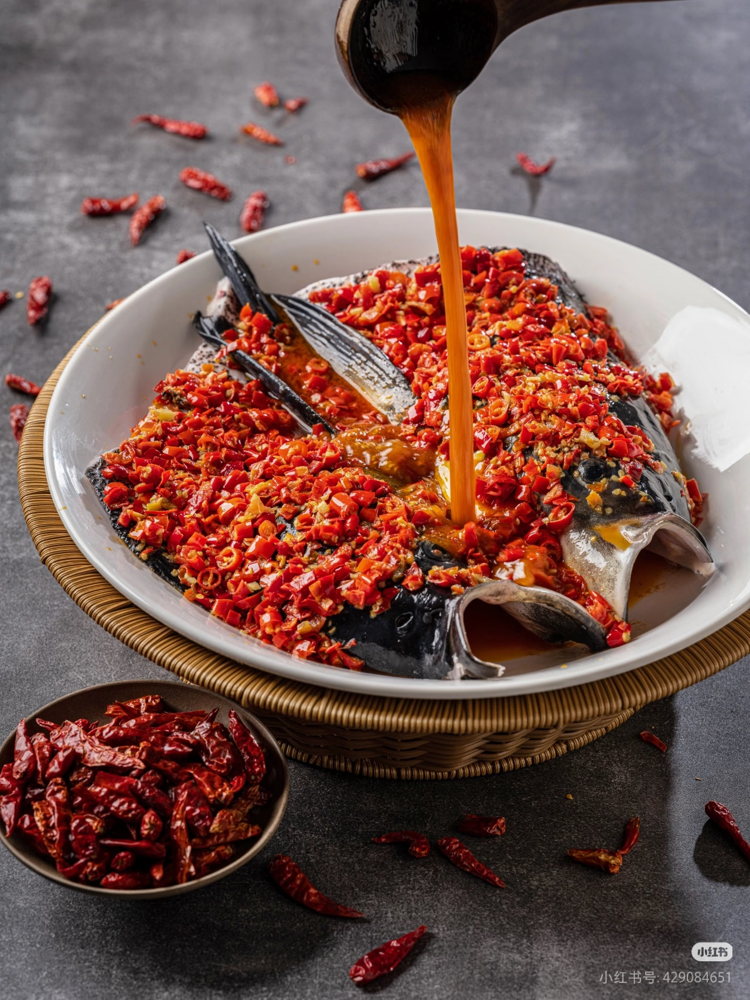
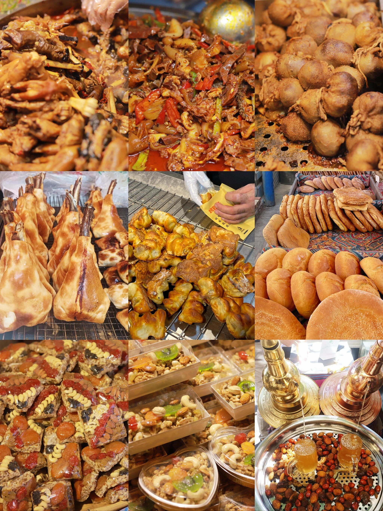
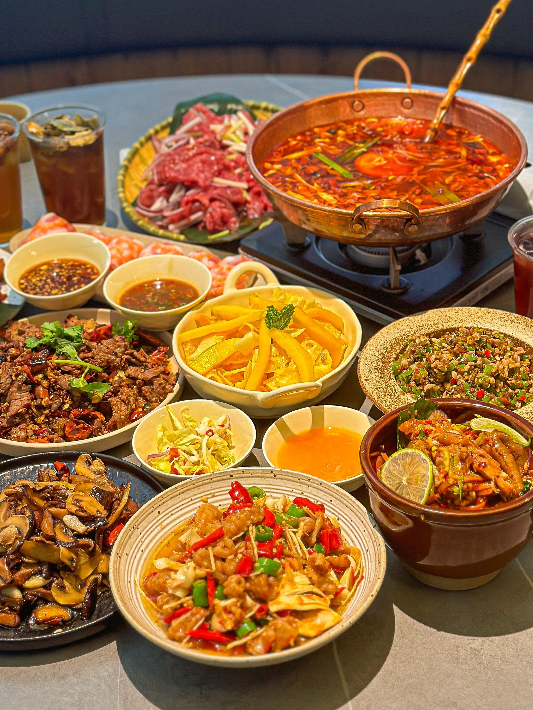
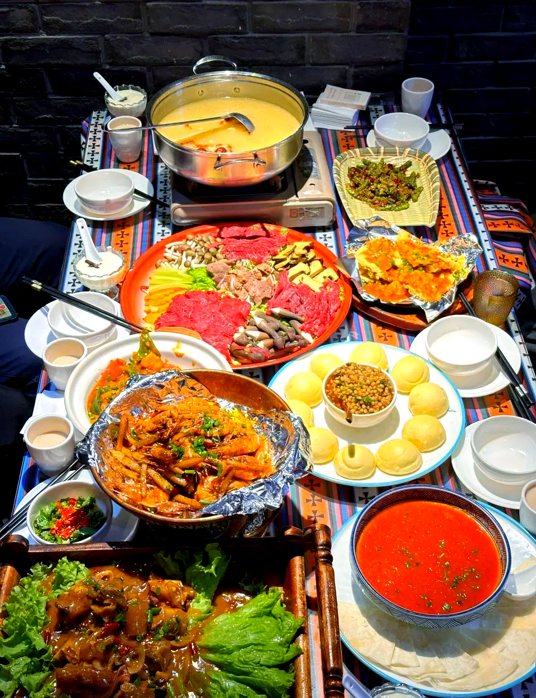

中华美食地图
探索各地特色美食，品味地域文化差异
美食地理分布
点击地图上的标记，探索各地特色美食
四川 · 川菜
麻辣鲜香，百菜百味
麻辣火锅
麻婆豆腐
回锅肉
广东 · 粤菜
清淡鲜美，原汁原味
白切鸡
烧鹅
肠粉
山东 · 鲁菜
咸鲜醇厚，精于制汤
葱烧海参
糖醋鲤鱼
九转大肠
江苏 · 苏菜
精致细腻，刀工精湛
松鼠鳜鱼
盐水鸭
狮子头
浙江 · 浙菜
鲜嫩清爽，制作精细
西湖醋鱼
东坡肉
龙井虾仁
福建 · 闽菜
鲜醇和醇，汤路广泛
佛跳墙
荔枝肉
鸡汤氽海蚌
湖南 · 湘菜
香辣酸辣，焦麻香鲜
剁椒鱼头
毛氏红烧肉
辣椒炒肉
安徽 · 徽菜
重油重色，重火功
臭鳜鱼
毛豆腐
胡适一品锅
美食地图图例
八大菜系发源地
特色小吃聚集区
食材原产地
少数民族美食
气候与美食
不同气候条件塑造了各地的饮食习惯
潮湿炎热地区
广东、福建等地，气候潮湿炎热，饮食以清淡、解暑为主，注重汤品和凉菜。
寒冷干燥地区
东北、西北等地，气候寒冷干燥，饮食以高热量、重口味为主，多炖菜和面食。
多雨湿润地区
四川、湖南等地，气候多雨湿润，饮食以麻辣为主，帮助驱除体内湿气。
沿海地区
沿海各省，海鲜资源丰富，饮食以海鲜为主，讲究原汁原味和鲜度。
省份特色美食
探索中国各省市的独特美食文化

四川 · 天府之国
川菜发源地，以麻辣鲜香著称，火锅文化盛行，小吃种类丰富多样。

广东 · 岭南风味
粤菜发源地，讲究原汁原味，早茶文化独特，烧腊制作精湛。

江苏 · 江南水乡
苏菜发源地，刀工精细，造型美观，擅长烹制河鲜湖鲜。
山东 · 孔孟之乡
鲁菜发源地，讲究咸鲜纯正，精于制汤，海鲜烹饪技艺高超。

湖南 · 辣味王国
湘菜发源地，以香辣酸辣著称，腊味制作独特，口味浓郁。
浙江 · 鱼米之乡
浙菜发源地，注重本味，制作精细，擅长烹制河鲜和时令蔬菜。
少数民族美食
体验多元文化的饮食特色

新疆美食
新疆少数民族美食以羊肉为主，善用孜然、辣椒等香料，风味独特，体现了草原游牧民族的饮食特色。
烤全羊
大盘鸡
拉条子
奶茶

云南美食
云南多民族聚居，美食文化多元，以野生菌、米线、傣味为特色，酸辣可口，风味独特。
汽锅鸡
鲜花饼
普洱茶
菠萝饭

西藏美食
西藏美食适应高原气候，以青稞、牦牛为主料，营养丰富，热量高，具有浓郁的藏族特色。
青稞酒
藏面
风干肉
甜茶